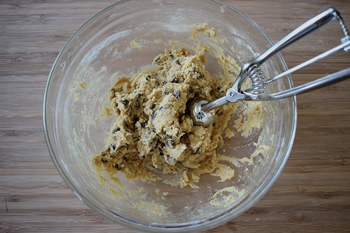
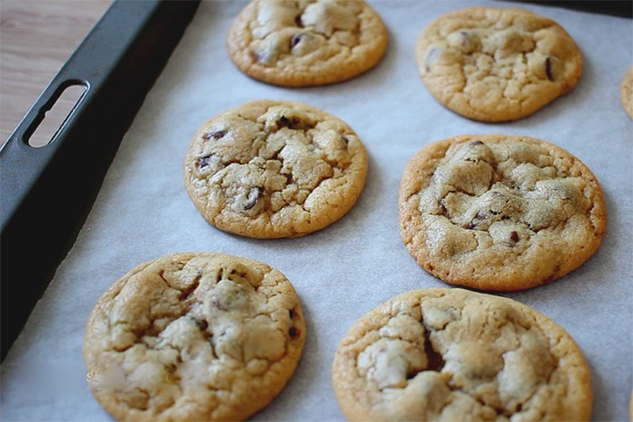

For me, nothing beats a fresh batch of gooey chocolate chip cookies fresh out of the oven. These cookies are soft and chewy on the inside, yet crisp on the outside. Once you try them, you'll be hooked - you'll never want to go back to your old cookie recipes again!
Ingredients
|

Image credit: Carina Stewart. http://carinastewart.com |
| Prep Time | Cook Time | Ready In | Serves |
|---|---|---|---|
| 20 mins. | 10 mins. | 1 hr. | 20 |
First, preheat the oven to 375 degrees fahrenheit.
Next, cream together the butter, white sugar, and brown sugar until smooth. Beat in the egg, then stir in the vanilla extract. Sieve the flour, baking soda, and salt into the mixing bowl and mix all ingredients together until the cookie dough is formed. Add in the chocolate chips and fold them through. Once everything is completely mixed, drop the dough by large spoonfuls onto ungreased pans.
Bake for about 7-10 minutes in the preheated oven, or until edges are nicely browned. Leave the cookies to cool for at least 5 minutes before transferring to a wire rack.
To check out the baking utensils used to make these cookies, click here!
The Final ProductWho can say no to a chocolate chip cookie? These cookies are perfect: soft and chewy in the middle and great for any occasion. Although they taste best the day they are baked, they will stay fresh for 2-3 days in an airtight container. Enjoy, and happy baking! |

Image credit: Carina Stewart. http://carinastewart.com |